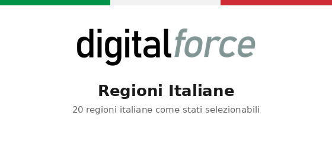

Aggiunge le 20 regioni italiane come stati selezionabili per l'Italia
La localizzazione base di Odoo include già le province italiane (Milano, Roma, Torino, ecc.) come stati collegati all'Italia. Questo modulo aggiunge le 20 regioni (Piemonte, Lombardia, Lazio, Sicilia, ecc.) come ulteriori record di stato, utilizzando i codici ufficiali ISO 3166-2:IT (da IT-01 a IT-20).
res.country.statebasenoupdate, quindi gli utenti possono modificarli o rimuoverli liberamente senza che gli aggiornamenti del modulo li sovrascrivanoDopo l'installazione di questo modulo, il campo Stato per gli indirizzi italiani mostrerà sia le province che le regioni insieme. Scegliere il livello di dettaglio più adatto al proprio caso d'uso (ad esempio reportistica o raggruppamento per regione rispetto a un indirizzo preciso a livello di provincia).
DigitalForce — www.digitalforce.it
Adds the 20 Italian regions as selectable states for Italy
Odoo's base localization already ships the Italian provinces (Milano, Roma, Torino, etc.) as states for Italy. This module adds the 20 regions (Piemonte, Lombardia, Lazio, Sicilia, etc.) as additional state records, using the official ISO 3166-2:IT region codes (IT-01 through IT-20).
res.country.state recordsbasenoupdate, so users can freely edit or remove them without module upgrades overwriting changesAfter installing this module, the State field for Italian addresses will list both provinces and regions together. Choose the level of detail appropriate to your use case (e.g. reporting or grouping by region vs. precise province-level addressing).
DigitalForce — www.digitalforce.it